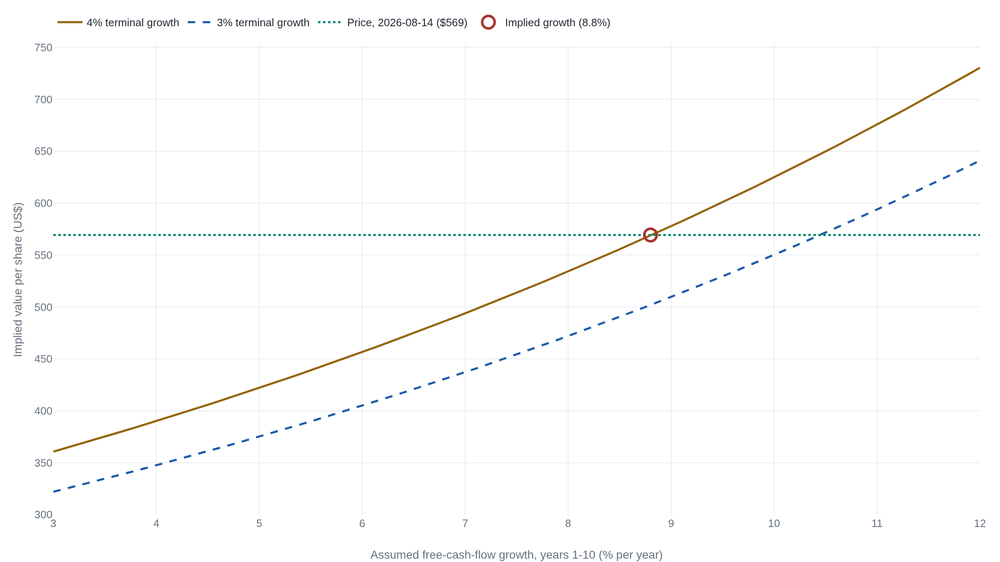

Run the valuation backward and read the growth already priced in
Invert the discounted-cash-flow model and Mastercard's $569 price turns into the growth rate the buyer is paying for, a number that shifts with every assumption behind it.
Why this matters
Every price in the market is a bet on the future, and the bet is usually invisible. The ticker shows a number, not the growth and returns that number quietly assumes. Reverse DCF makes the bet legible. It takes the discounted-cash-flow model this course already built and runs it backward, holding a company's price fixed and solving for the free-cash-flow growth the price must be counting on. This lesson does that once, all the way through, for Mastercard at $569 a share. It turns the price into an implied growth rate. It shows how far that rate shifts when the discount rate or the terminal assumption behind it changes. And it asks whether a company already this large can grow into the price. By the end you will be able to run any price backward into the expectation it carries, and to say plainly which assumptions your answer depends on.
- 01
- Three-quarters of a discounted-cash-flow value comes from after the forecast ends: the model this lesson runs backward, and why one growth point swings the whole value.
- 02
- At $264, Adobe is a 12% premium and a 30% discount at once: the conservative and optimistic values this lesson reads a price between.
- 03
- Apple's profit rose while its free cash flow fell: why the cash base fed into the model is a choice, not a figure any rule fixes.
The model runs the other way
The discounted-cash-flow model this course built takes a forecast of free cash flow, a discount rate, and a terminal value, and returns one number: what the business is worth today. Reverse DCF keeps the same machine and swaps which number is unknown. Hold the current price fixed as the answer, and solve instead for the growth the price must assume. Rappaport and Mauboussin, who set out the method, call it using "the market's own pricing model, the discounted cash flow model, with an important twist."1 The output is no longer a value to set against the price. It is the expectation already inside the price, stated as a number that can be judged.
The margin-of-safety lesson built two values for one company, a conservative one and an optimistic one, and read the price against the lower.1 Reverse DCF works the same gap from the other side. Rather than ask what a business is worth and where the price sits against that estimate, it asks what the buyer at today's price is already assuming, and only then whether a company like this one can deliver it.
Solving Mastercard's price for growth
Mastercard closed at $569.29 on Friday, August 14, 2026.2 With 876.0 million shares outstanding, that price is a market capitalization of about $498.7 billion, the equity value the inversion has to reproduce.3
The cash going in is fiscal-2025 free cash flow. Operating cash flow was $17,648 million; subtract $489 million spent on property and equipment and $726 million of capitalized software, and the base is $16,433 million.4 The discount rate is a cost of equity near 9 percent. The ten-year Treasury yielded 4.69 percent on August 17, 2026,5 and an equity risk premium of roughly 4.2 to 4.5 percent for 2026 sits on top of it. Damodaran reads that premium off the whole index by the same inversion, applied to the market at large.6 Mastercard carries little debt, so its weighted-average cost of capital lands close to that cost of equity.
Now the machine. Grow the $16,433 million base for ten years at some rate, add a terminal value at a perpetual rate of 4 percent, discount every year back at 9 percent, and divide by the share count. Written out, the target price fixes the left side and one term is left free.
- FFiscal-2025 free cash flow, the $16,433M base the forecast grows from.
- gAnnual free-cash-flow growth for years 1 to 10, the one unknown the price solves for.
- rThe 9 percent cost of equity that discounts each year back to today.
- g_{T}Terminal growth after year 10, held at 4 percent and capped by the economy.
Everything but the growth rate is now pinned. The price supplies the left side, and the value of the growth that makes the two sides equal is 8.8 percent. At a 9 percent cost of equity and a 4 percent terminal rate, $569 says the market expects Mastercard's free cash flow to compound at about 8.8 percent a year for a decade. That is a testable statement about the future, not a verdict on the stock.
The implied rate moves with your assumptions
The 8.8 percent looks precise, and it is not a fact the market states. It is the answer to a question with three assumptions built in: the discount rate, the terminal growth rate, and the length of the explicit forecast. Move any one and the implied growth moves with it. The curve below plots the model's output against the growth assumption; the implied rate is wherever that curve crosses today's price. Slide the terminal rate from 4 percent to 3 percent and the same $569 now demands 10.5 percent.

A simple perpetuity asks least; a longer forecast with a lower terminal rate asks most.
| Model structure | Cost of equity | Terminal rate | Implied growth |
|---|---|---|---|
| Single-stage perpetuity | 9% | — | 5.5% forever |
| Ten years, then terminal | 9% | 4% | 8.8% for the decade |
| Ten years, lower terminal | 9% | 3% | 10.5% |
| Ten years, higher discount | 9.5% | 4% | 10.1% |
| Ten years, lower discount | 8.5% | 4% | 7.4% |
A one-point move in a single assumption shifts the answer by one to two points of growth. The reason is where the value sits. In every column the terminal block is about two-thirds of the total, and Damodaran's rule follows: as the terminal value takes a larger share, the growth assumptions carry more weight, not less.7 The terminal rate cannot be dialed freely either. A perpetual growth rate cannot exceed the growth of the economy, which is why 3 to 4 percent is a defensible band and 6 percent is not.8 So the honest form of the result carries its assumptions with it: 8.8 percent at a 9 percent discount rate and a 4 percent terminal rate, never a bare 8.8 percent the market is said to quote.
Which cash flow you feed it
The three modeling assumptions are not the only soft input. The base itself is contestable, the point the free-cash-flow lesson made: no accounting rule fixes what free cash flow is. Mastercard's operating cash flow adds back stock-based compensation, a real cost paid to employees in shares rather than cash, so operating cash flow minus capital spending counts that compensation as money the owner keeps. Capitalized software, $726 million in fiscal 2025, is a second reinvestment an analyst can subtract or leave in.4 Leave it in and the base rises from $16,433 million to $17,159 million; strip out the stock-comp add-back instead and it falls. A higher base clears the same price with less growth; a lower base demands more. Damodaran's first rule holds throughout: the inversion is only as sound as its inputs, and those inputs have to be consistent with one another.9 Reverse DCF does not remove the analyst's judgment about cash flow. It relocates that judgment from the forecast to the base and the discount rate.
Can Mastercard clear its own bar?
The number by itself judges nothing. Reverse DCF reads the expectation in the price; it does not tell you the price is right. The method has two skills, and reading the implied expectations is only the first. The second is judging how those expectations are likely to be revised, which is competitive-strategy work the arithmetic cannot do.10 So the 8.8 percent bar has to be set against what the company has actually done.
Across fiscal 2023 to 2025, Mastercard grew revenue 14.3 percent a year, net income 15.6 percent, and free cash flow 22.8 percent.4 Every one of those ran well ahead of the 8.8 percent the price now asks. The tempting read, that the bar sits below recent growth so the stock is cheap, asks the wrong question. The bar is not this year's growth rate. It is a decade of it, held by a company already generating $16 billion of free cash flow a year. The question the price leaves is durability at scale: whether a business that large can compound cash at high-single digits for ten years while the base it grows from keeps getting bigger.
The price does not demand heroics from Mastercard. It demands endurance: ten years of high-single-digit free-cash-flow growth from a $16 billion base, a pace below the company's own recent record but asked of it far longer. Whether that holds is a judgment about Mastercard's competitive position, not a figure the inversion produces. What the inversion contributes is to state the bar precisely and to show it move as the assumptions behind it move.4
The takeaway
Reverse DCF turned Mastercard's $569 price into a bar: about 8.8 percent free-cash-flow growth a year for a decade, at a 9 percent discount rate and a 4 percent terminal rate. Change either assumption and the bar moves, to 10.5 percent at a 3 percent terminal rate, to 5.5 percent as a simple perpetuity. Quote the implied number with the assumptions that produced it, never on its own. The bar sits below what Mastercard has grown lately, so the question the price leaves you is not whether the company is fast enough today but whether it can hold that pace for ten years at its size. Reaching that question, and naming the assumptions that frame it, is what running the model backward gives you that a forward valuation does not.
- 01
- Expectations Investing (Rappaport & Mauboussin): the book's own site, with free tutorials and a downloadable reverse-DCF spreadsheet.
- 02
- Aswath Damodaran, "Musings on Markets": the DCF-myth series on terminal value, discount rates, and keeping a valuation's assumptions consistent.
Sources
- Expectations Investing · The Book (Rappaport & Mauboussin)
- StockAnalysis · Mastercard (MA) statistics
- U.S. SEC · Mastercard Incorporated Q2 2026 Form 10-Q
- U.S. SEC · Mastercard Incorporated FY2025 Form 10-K
- FRED · 10-Year Treasury Constant Maturity Rate (DGS10)
- Aswath Damodaran · The Price of Risk: The Equity Risk Premium in 2026
- Aswath Damodaran · DCF Myth 5.5: The Terminal Value ate my DCF
- Aswath Damodaran · DCF Myth 5.4: Negative Growth Rates Forever?
- Aswath Damodaran · DCF Myth 1: A DCF is an exercise in modeling, not math
- Expectations Investing · Reading a stock's expectations